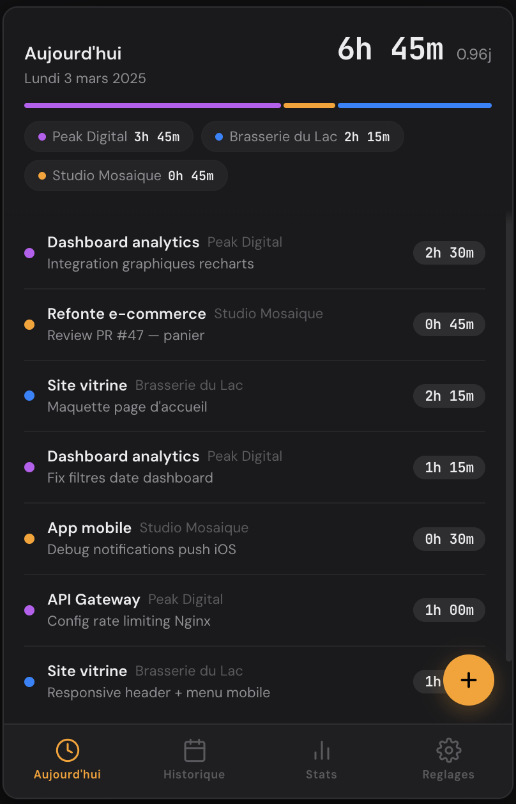
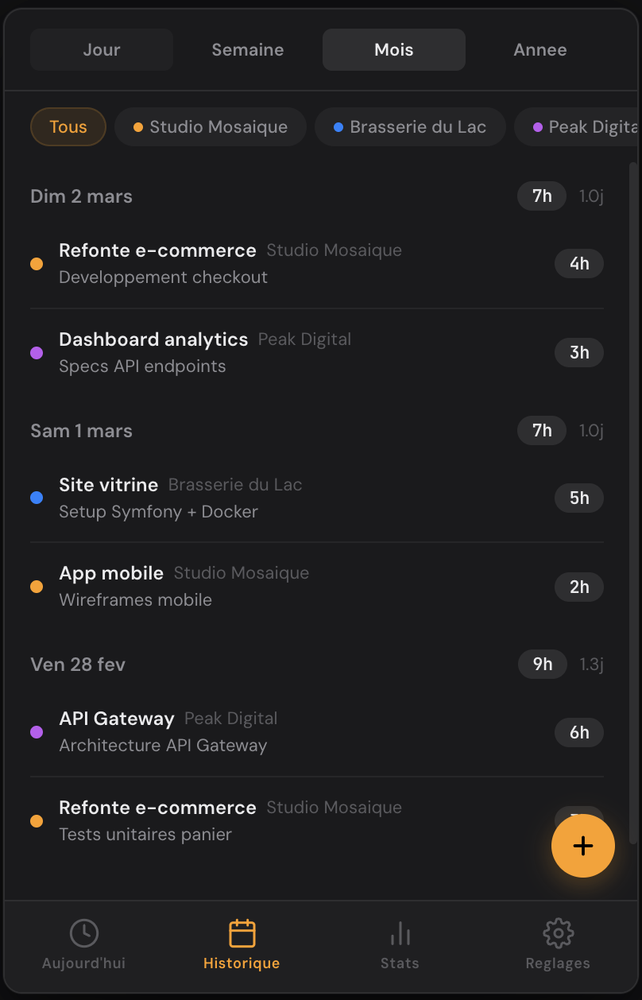
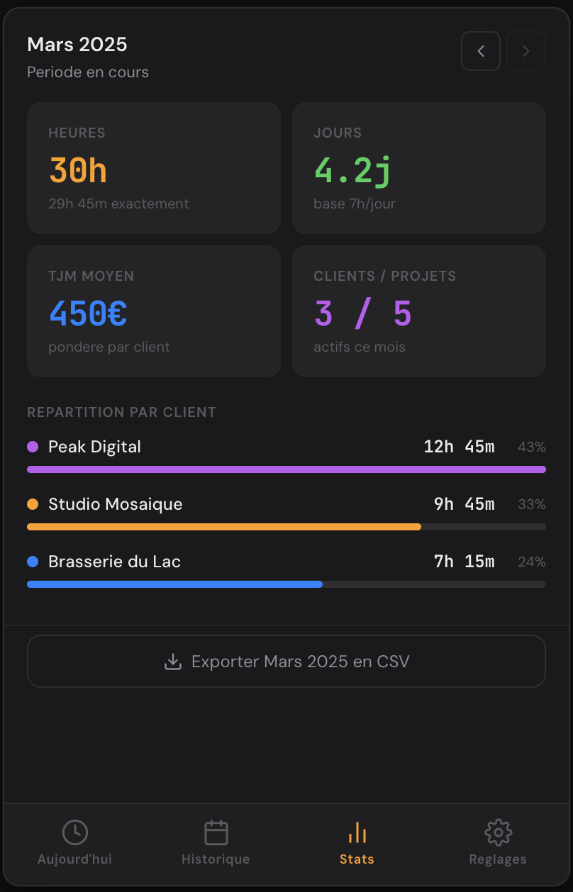
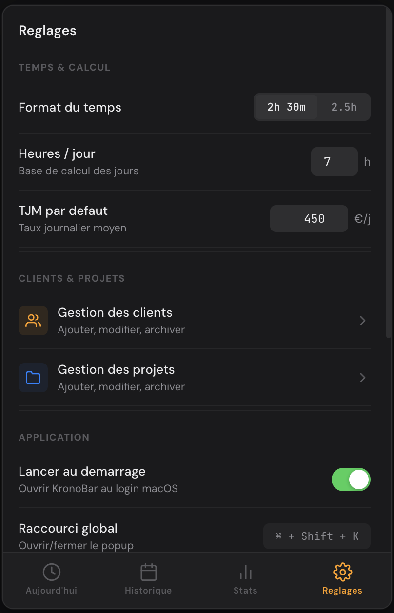
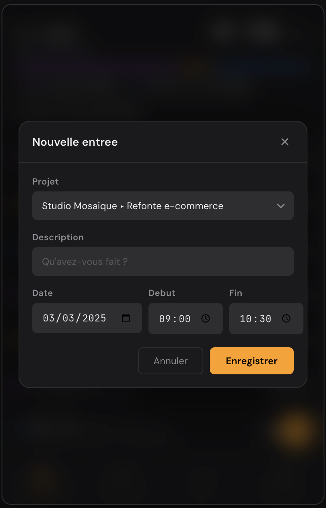

KronBar// time tracking
Dans ta barre de menus. Un clic pour démarrer — clients, projets, stats. Tes données restent sur ta machine. Pas de compte, pas de cloud, jamais.

Ta journée,
en un coup d'œil
Le résumé de tes sessions s'affiche dès que tu ouvres KronoBar. Total d'heures, répartition par client, chaque entrée détaillée.

Jour, semaine,
mois — ton choix
Navigue dans tes entrées passées avec les filtres de période. Filtre par client en un tap pour isoler rapidement un projet.
Facture juste.
Connais ta valeur.
Revenus estimés par client selon leur TJM, répartition visuelle, export CSV en un clic. Tout ce qu'il faut pour tes devis et factures, sans friction.


Ton app,
toujours à jour
Configure ton environnement et garde KronoBar à jour. Un badge sur l'onglet te prévient quand une nouvelle version est disponible.
Toujours là, jamais dans le chemin. Accès instantané d'un clic, peu importe l'app en cours.
Structure libre avec dots colorés. Autant de clients et de projets que ton activité le demande.
Tes données restent sur ta machine. Pas de compte, pas de serveur tiers, pas de surprise.
Ajoute une entrée avec date, projet et durée. Simple, rapide, sans friction.
Configure ton taux et ta base horaire. KronoBar calcule tout automatiquement.
Exporte n'importe quelle période en un clic. Compatible avec tous tes outils de facturation.
Toutes les vues

Prêt en
30 secondes
Installe, ouvre, et ton premier timer tourne. Aucune configuration, aucun compte, aucun cloud à paramétrer.
.zip depuis le bouton ci-dessus.
.zip pour extraire KronoBar.app.
KronoBar.app dans ton dossier /Applications.
KronoBar — il apparaîtra dans ta barre de menus. C'est tout.
Setup.exe depuis le bouton ci-dessus.
.exe. Windows SmartScreen peut afficher un avertissement — clique sur "Informations complémentaires" puis "Exécuter quand même".